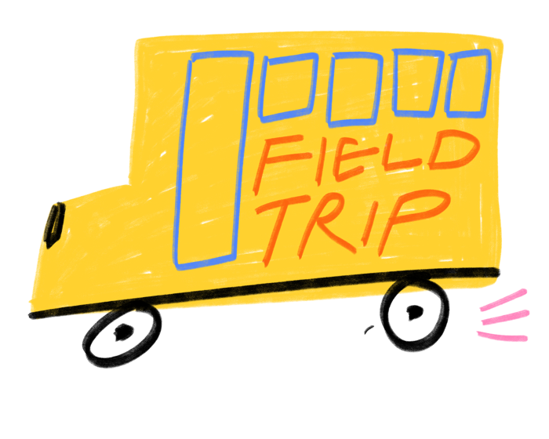

Help your kid keep track
of life in two homes.
A yearlong calendar and feelings workbook for kids ages 6 to 14 who go back and forth between two homes.


Why it helps
Going back and forth is a lot for a kid to hold in their head: which home tonight, who's doing pickup, when the next switch is. When kids can see the plan for themselves, the week feels less out of their hands. The feelings pages give them a place for the rest. The book travels with them, so the plan goes where they go.
What's inside
- Weekly pages to color-code each home
- Lots of activities for big feelings
- Prompts, drawing space and a sticker sheet
- Undated, so you can start any day of the year




Free shipping in the U.S.
Scan the code or visit 2homies.com.
Orders ship in 3 to 5 business days.

2Homies is a helpful everyday tool, not therapy. Made by moms. Illustrated by Maxine McCrann.